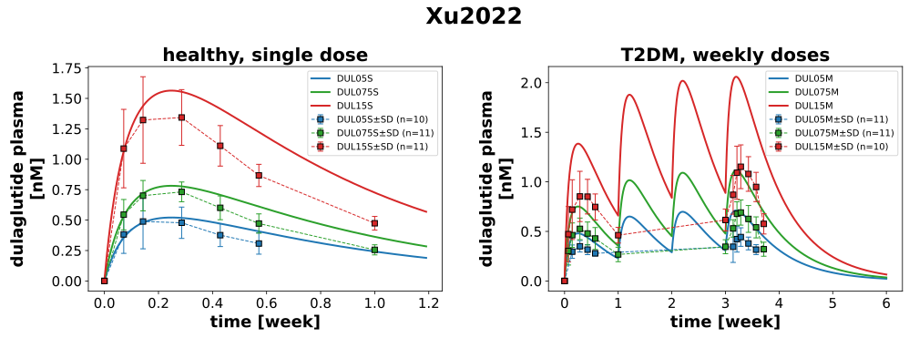
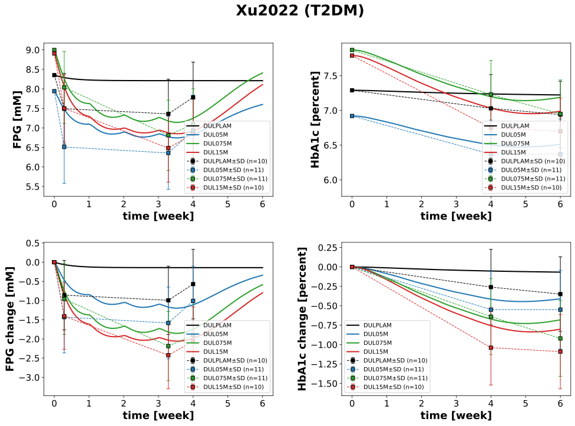

Overview
Models
| model | source |
|---|---|
| model | dulaglutide_body.xml |
Datasets
Figures (2)




Code
"""Simulation experiment of the study Xu2022.
A two-part, double-blind, placebo-controlled phase I study in native Chinese
(NCT01667900), dulaglutide SC into the abdomen about 15 min before
breakfast. Part A: healthy men in a crossover of three periods (washout >= 28
days), each subject placebo and two of the three doses 0.5, 0.75 and 1.5 mg
(PK of 10, 11 and 11 subjects, Table 2). Part B: type 2 diabetes treated with
diet and exercise or metformin (or a thiazolidinedione) monotherapy, placebo,
0.5, 0.75 or 1.5 mg once weekly on days 1, 8, 15 and 22. The study days count
from day 1, the day of the first dose (time 0): the FPG (mean of the samples
0.5 and 0.25 h before breakfast) of days 3, 24 and 29 is at 2, 23 and 28 days,
the HbA1c of days 29 and 43 at 28 and 42 days. The plasma concentrations are
arithmetic means with SD (Fig 1, RIA, LLOQ 10 ng/ml), the FPG and HbA1c least
squares mean changes from baseline with 95 % CI (Fig 2a, Fig 3). The baseline
FPG is not reported, it is estimated from the HbA1c with `fpg_from_hba1c`;
the absolute FPG is this estimate plus the change.
"""
from collections.abc import Mapping
from typing import ClassVar, override
import pandas as pd
from pkpdsim.metadata import (
AdministrationSite,
ApplicationForm,
Coadministration,
DataType,
Dosing,
Fasting,
Health,
PKPDData,
PKPDMappingMetaData,
Route,
Tissue,
)
from sbmlsim import Q
from sbmlsim.data import DataSet
from sbmlsim.fit import FitData, FitMapping
from sbmlsim.plot import Axis, Figure
from sbmlsim.simulation import Simulation
from pkdb_models.models.dulaglutide import MODEL
from pkdb_models.models.dulaglutide.experiments.base_experiment import (
DulaglutideSimulationExperiment,
)
class Xu2022(DulaglutideSimulationExperiment):
"""Simulation experiment of Xu2022."""
#: patients with type 2 diabetes, four weekly doses (part B)
interventions_t2dm: ClassVar[list[str]] = [
"DULPLAM",
"DUL05M",
"DUL075M",
"DUL15M",
]
#: healthy subjects, single doses (part A)
interventions_healthy: ClassVar[list[str]] = ["DUL05S", "DUL075S", "DUL15S"]
interventions: ClassVar[list[str]] = [
*interventions_t2dm,
*interventions_healthy,
]
bodyweights: ClassVar[dict[str, float]] = {
"DULPLAM": 76.0, # kg
"DUL05M": 70.7, # kg
"DUL075M": 67.9, # kg
"DUL15M": 73.4, # kg
"DUL05S": 65.8, # kg
"DUL075S": 65.8, # kg
"DUL15S": 65.8, # kg
}
heights: ClassVar[dict[str, float]] = {
"DULPLAM": 167.71, # cm
"DUL05M": 166.36, # cm
"DUL075M": 164.15, # cm
"DUL15M": 167.41, # cm
"DUL05S": 169.97, # cm
"DUL075S": 169.97, # cm
"DUL15S": 169.97, # cm
}
doses: ClassVar[dict[str, float]] = {
"DULPLAM": 0, # mg
"DUL05M": 0.5, # mg
"DUL075M": 0.75, # mg
"DUL15M": 1.5, # mg
"DUL05S": 0.5, # mg
"DUL075S": 0.75, # mg
"DUL15S": 1.5, # mg
}
colors: ClassVar[dict[str, str]] = {
# diabetic patients
"DULPLAM": "black",
"DUL05M": "tab:blue",
"DUL075M": "tab:green",
"DUL15M": "tab:red",
# healthy subjects
"DUL05S": "tab:blue",
"DUL075S": "tab:green",
"DUL15S": "tab:red",
}
hba1cs: ClassVar[dict[str, float]] = { # [percent]
"DULPLAM": 7.29,
"DUL05M": 6.92,
"DUL075M": 7.87,
"DUL15M": 7.79,
}
#: the means of 0.5 mg in type 2 diabetes below the LLOQ of 10 ng/ml
#: (4.7 +- 7.1 ng/ml at 12 h, 6.2 +- 6.3 ng/ml before the fourth dose):
#: means with the values below the LLOQ as 0, not concentrations
below_lloq: ClassVar[dict[str, list[float]]] = {
"dulaglutide_DUL05M": [12.0, 504.0], # [hr]
}
info_pk: ClassVar[dict[str, str]] = {
"[Cvep_dul]": "dulaglutide", # Fig1
}
#: observable: data, the absolute series (first row of the figure) and
#: the changes from baseline of the same measurements (second row)
info_pd: ClassVar[dict[str, str]] = {
"[fpg]": "fpg", # Fig2
"hba1c": "hba1c", # Fig3
"fpg_change": "fpg_change", # Fig2
"hba1c_change": "hba1c_change", # Fig3
}
tissues: ClassVar[Mapping[str, Tissue]] = {
"[fpg]": Tissue.PLASMA,
"hba1c": Tissue.BLOOD,
"fpg_change": Tissue.PLASMA,
"hba1c_change": Tissue.BLOOD,
}
def fpg_baseline(self, intervention: str) -> float:
"""Get the estimated baseline FPG of an arm of the patients [mM]."""
return self.fpg_from_hba1c(self.hba1cs[intervention])
@override
def datasets(self) -> dict[str, DataSet]:
dfs: dict[str, pd.DataFrame] = {}
for fig_id in ["Fig1", "Fig2", "Fig3"]:
df = self.load_dataframe(fig_id)
for label, df_label in df.groupby("label"):
dfs[str(label)] = df_label
for label, times in self.below_lloq.items():
df = dfs[label]
dfs[label] = df[~df["time"].isin(times)]
for intervention in self.interventions_t2dm:
# the absolute FPG: the estimated baseline plus the change
df = dfs[f"fpg_change_{intervention}"].copy()
df["mean"] = df["mean"] + self.fpg_baseline(intervention)
df["label"] = f"fpg_{intervention}"
df["measurement_type"] = "concentration"
dfs[f"fpg_{intervention}"] = df
dsets = {}
for label, df in dfs.items():
dset = DataSet.from_df(df, self.ureg)
if label.startswith("dulaglutide_"):
dset.unit_conversion("mean", 1 / self.Mr.dul)
dsets[label] = dset
return dsets
@override
def simulations(self) -> dict[str, Simulation]:
simulations: dict[str, Simulation] = {}
week = 7 * 24 # [hr]
for intervention in self.interventions_t2dm:
dose = Q(self.doses[intervention], "mg")
simulations[f"dul_{intervention}"] = Simulation(
time_unit="hr",
# four weekly doses, followed to day 43
end=6 * week,
preinit_changes={
**self.default_changes(),
**self.baseline_changes(
self.bodyweights[intervention],
hba1c=self.hba1cs[intervention],
fpg=Q(self.fpg_baseline(intervention), "mM"),
),
"HEIGHT": Q(self.heights[intervention], "cm"),
# dose on day 1
"SCDOSE_dul": dose,
},
# doses on days 8, 15 and 22
changes=[
self.add_doses(
[k * week for k in range(1, 4)], {"SCDOSE_dul": dose}
)
],
)
for intervention in self.interventions_healthy:
simulations[f"dul_{intervention}"] = Simulation(
time_unit="hr",
end=200,
preinit_changes={
**self.default_changes(),
**self.baseline_changes(self.bodyweights[intervention]),
"HEIGHT": Q(self.heights[intervention], "cm"),
"SCDOSE_dul": Q(self.doses[intervention], "mg"),
},
)
return simulations
@override
def fit_mappings(self) -> dict[str, FitMapping]:
mappings = {}
# pharmacokinetics
for intervention in self.interventions:
if intervention == "DULPLAM":
continue
healthy = intervention in self.interventions_healthy
for sid, name in self.info_pk.items():
mappings[f"fm_dul_{intervention}"] = FitMapping(
self,
reference=FitData(
self,
dataset=f"{name}_{intervention}",
xid="time",
yid="mean",
yid_sd="mean_sd",
count="count",
),
observable=FitData(
self,
task=f"task_dul_{intervention}",
xid="time",
yid=sid,
),
metadata=PKPDMappingMetaData(
tissue=Tissue.PLASMA,
route=Route.SC,
application_form=ApplicationForm.SOLUTION,
dosing=Dosing.SINGLE if healthy else Dosing.MULTIPLE,
health=Health.HEALTHY if healthy else Health.T2DM,
fasting=Fasting.NR,
# patients: diet and exercise or metformin (or a
# thiazolidinedione) monotherapy
coadministration=Coadministration.NONE
if healthy
else Coadministration.ANTIHYPERGLYCEMIC_MEDICATION,
administration_site=AdministrationSite.ABDOMEN,
data=PKPDData.PK,
data_type=DataType.MEAN,
),
)
# pharmacodynamics
for intervention in self.interventions_t2dm:
for sid, name in self.info_pd.items():
mappings[f"fm_dul_{intervention}__{name}"] = FitMapping(
self,
reference=FitData(
self,
dataset=f"{name}_{intervention}",
xid="time",
yid="mean",
yid_sd="mean_sd",
count="count",
),
observable=FitData(
self,
task=f"task_dul_{intervention}",
xid="time",
yid=sid,
),
metadata=PKPDMappingMetaData(
tissue=self.tissues[sid],
route=Route.SC,
application_form=ApplicationForm.SOLUTION,
dosing=Dosing.MULTIPLE,
health=Health.T2DM,
fasting=Fasting.NR,
coadministration=Coadministration.ANTIHYPERGLYCEMIC_MEDICATION,
administration_site=AdministrationSite.ABDOMEN,
data=PKPDData.PD,
data_type=DataType.MEAN,
),
)
return mappings
@override
def figures(self) -> dict[str, Figure]:
fig_pk = Figure(
experiment=self,
sid="Fig1_pk",
num_rows=1,
num_cols=2,
name=f"{self.__class__.__name__}",
)
plots = fig_pk.create_plots(
xaxis=Axis(self.label_time, unit=self.unit_time), legend=True
)
plots[0].name = "healthy, single dose"
plots[0].set_yaxis(self.label_dul, unit=self.unit_dul)
plots[1].name = "T2DM, weekly doses"
plots[1].set_yaxis(self.label_dul, unit=self.unit_dul)
for intervention in self.interventions:
if intervention == "DULPLAM":
continue
k = 0 if intervention in self.interventions_healthy else 1
for sid, name in self.info_pk.items():
# simulation
plots[k].add_data(
task=f"task_dul_{intervention}",
xid="time",
yid=sid,
label=intervention,
color=self.colors[intervention],
)
# data
plots[k].add_data(
dataset=f"{name}_{intervention}",
xid="time",
yid="mean",
yid_sd="mean_sd",
count="count",
label=intervention,
color=self.colors[intervention],
)
# pharmacodynamics
fig_pd = Figure(
experiment=self,
sid="Fig2_Fig3_pd",
num_rows=2,
num_cols=2,
name=f"{self.__class__.__name__} (T2DM)",
)
plots = fig_pd.create_plots(
xaxis=Axis(self.label_time, unit=self.unit_time), legend=True
)
for kp, sid in enumerate(self.info_pd):
plots[kp].set_yaxis(self.labels[sid], unit=self.units[sid])
for intervention in self.interventions_t2dm:
for kp, (sid, name) in enumerate(self.info_pd.items()):
# simulation
plots[kp].add_data(
task=f"task_dul_{intervention}",
xid="time",
yid=sid,
label=intervention,
color=self.colors[intervention],
)
# data
plots[kp].add_data(
dataset=f"{name}_{intervention}",
xid="time",
yid="mean",
yid_sd="mean_sd",
count="count",
label=intervention,
color=self.colors[intervention],
)
return self.figures_by_sid(fig_pk, fig_pd)
if __name__ == "__main__":
MODEL.run_experiments(Xu2022, output_dir=Xu2022.__name__)